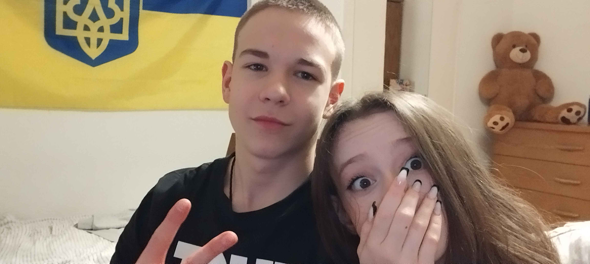

CS2 player portfolio
Future Tier One.
Built on 60 Hz, sharpened by bad ping, and powered by pure timing. Meet Sweezkh—the pistol king playing every round like it already belongs in the montage.

The origin story
Born against the odds.
Не железо играет. Играет инстинкт.
В мире киберспорта, где большинство игроков полагаются на мощные ПК и мониторы с высокой герцовкой, появился он — Sweezkh. Игрок будущего, будущая Tier 1 легенда, начавший свой путь на 60Hz мониторе, с пингом выше среднего и мышкой, пережившей три падения.
Несмотря на всё это, он стал известен как Pistol King — человек, который выигрывал раунды с одним лишь Five-Seven против фуллбай команды. Его чувство тайминга было почти сверхъестественным, движения — резкими и точными, а понимание игры — будто он видел матч за секунду до того, как всё происходило.
SMG в его руках превращалось в оружие массового уничтожения: MAC-10, MP9, UMP — всё становилось смертельно опасным. Sweezkh играл не на девайсах, а на инстинктах.
Играя на низких FPS, он давал хайлайты, которые попали в клипы будущего. Его путь ещё не закончен, но одно уже ясно: Sweezkh — это имя, которое войдёт в историю CS не как очередной игрок, а как легенда, родившаяся вопреки всему.
Featured archive
Play the tape.

Bielefeld, Germany
Spawn point.

Find the player